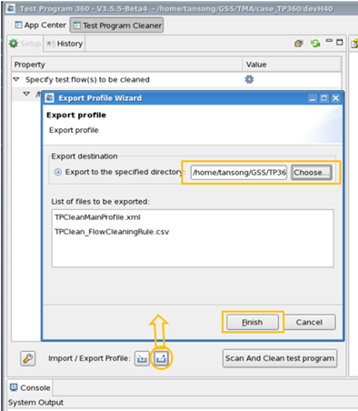
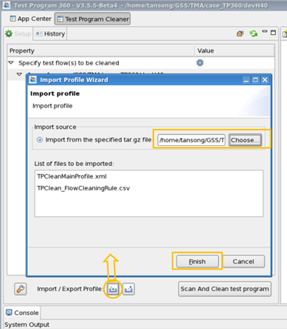

Module profile
Module profile is a tar.gz package which stores the configuration of a supported module, for example the Test Program Cleaner. Users can share this package and import it to load the TP360 module profile.
About this task
There are three modules in TP360 that you can save their configurations in a profile:
Procedure
- Open TP360, and launch a module which supports profile.
- Use "import" to initial the configuration from a tar.gz profile package, or do this configuration manually.
- Use "export" to export the module’s configuration to a tar.gz profile package.
Example
- Taking the Test Program Cleaner as an example. Open TP360, Launch Test Program Cleaner.
- Configure Test Program Cleaner by use "import" or manually.
- Click "export" icon to open Export page, and choose "export to the specified directory"
- Choose a tar.gz package, click "finish", and you will get a
tar.gz profile package which contains the configuration of Test Program Cleaner.

- (Optional) you can verify the exported profile package by do some changes, then use "import
from the specified tar.gz file" to select the profile package you just exported.

This exported tar.gz profile package can be shared between different engineers; they just need to use the import to finish the configuration.
What to do next
After export the module profile package, you can send it to other engineers so that they can import the profile.
Functional changes
- Introduced in SmarTest 7.3.3